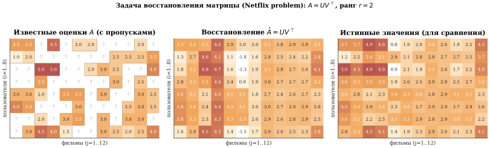
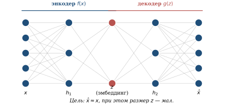
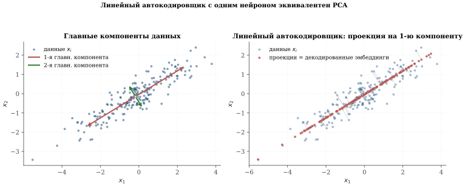
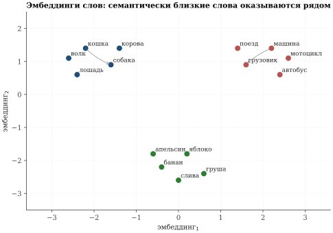
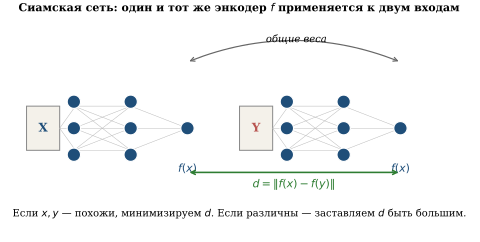
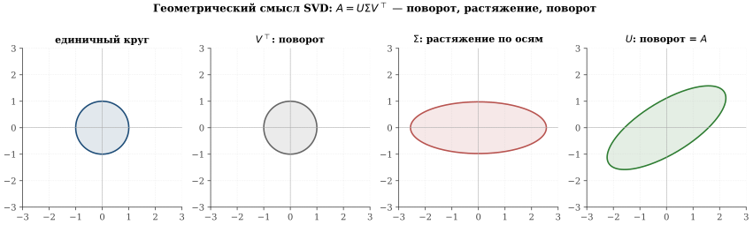
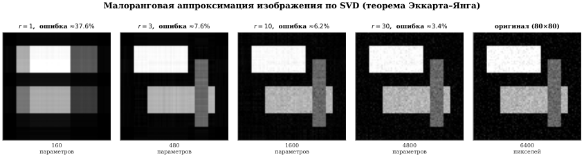

Задачи обучения без учителя
Во всех задачах предыдущих параграфов каждому обучающему объекту \mathbf x_i сопутствовал правильный ответ y_i: голос за кандидата, период обращения планеты, рукописная цифра. Такая задача называется обучением с учителем (supervised learning): учителем выступает разметка, кем-то заранее проставленная.
На практике разметка часто отсутствует. У онлайн-кинотеатра — терабайты данных о просмотрах и оценках, но никто не объяснил алгоритму, что «Иван — любитель боевиков, а Маша — драм». У поисковой системы — миллиарды веб-страниц, но никто не пометил, какие из них «про физику», а какие «про поэзию». В таких ситуациях говорят об обучении без учителя (unsupervised learning). Цель — самостоятельно обнаружить структуру в данных, выделить «главные оси», на которых эти данные расположены, и научиться компактно представлять каждый объект.
Этот параграф устроен так. Мы разберём два центральных сюжета — восстановление матриц по неполным данным (matrix completion, она же ставшая знаменитой Netflix problem) и автокодировщики. Затем покажем, что оба сводятся к универсальной алгебраической конструкции — сингулярному разложению матриц (SVD). В завершении обсудим эмбеддинги и контрастивное обучение, которые лежат в основе современных систем распознавания лиц, поиска и больших языковых моделей.
Задача восстановления матрицы. Netflix problem
В октябре 2006 г. американская компания Netflix — тогда ещё сервис проката DVD по почте — объявила публичный конкурс с призом в 1 миллион долларов: первый, кто построит алгоритм, угадывающий оценки пользователей хотя бы на 10 % точнее, чем собственный алгоритм Netflix, получит всю сумму.
Компания выложила открытый датасет: 480\,189 пользователей, 17\,770 фильмов и \approx 100 млн оценок (по 5-балльной шкале). Каждая оценка сопровождалась датой; нужно было предсказывать неизвестные оценки.
Конкурс длился почти три года. Победила команда BellKor’s Pragmatic Chaos (объединение исследователей из AT&T, Yahoo, Big Chaos и Pragmatic Theory), и выиграла она 21 сентября 2009 г. с разницей в 20 минут над командой Ensemble. Сердцевиной победившего метода была именно малоранговая матричная факторизация, о которой мы сейчас расскажем. Этот сюжет принципиально изменил индустрию рекомендательных систем — сегодня описанные подходы лежат в основе «вам может понравиться» в Кинопоиске, Окко, YouTube, Spotify, Amazon и сотнях других сервисов.
Формальная постановка. Пусть имеется m пользователей и n фильмов. Полная информация об оценках — это матрица A\in\mathbb{R}^{m\times n}:
A_{ij}\;=\;\text{оценка, которую пользователь $i$ поставил фильму $j$.}
Однако в реальности большинство элементов этой матрицы неизвестны — средний пользователь Netflix посмотрел и оценил лишь несколько десятков фильмов из почти 18 тысяч. Обозначим
\Omega\;\subset\;\{1,\dots,m\}\times\{1,\dots,n\}
множество наблюдённых пар (i,j). Задача восстановления матрицы по неполным данным: по известным A_{ij}, (i,j)\in\Omega, восстановить значения A_{ij} для (i,j)\notin\Omega (рис. 3.22).

Идея: малоранговая факторизация. Без дополнительных предположений задача безнадёжна: восстановить неизвестное число можно как угодно. Но если предположить, что есть скрытые признаки — например, «насколько фильм комедийный», «насколько драматичный», «сколько в нём действия» — и описать каждого пользователя i парой чисел, отражающей его пристрастия, а каждый фильм j — такой же парой чисел, то оценка естественным образом получается как «скалярное произведение пристрастий и свойств».
Формализуем. Пусть r — небольшое число (например, r=2, 5 или 20). Введём
матрицу U\in\mathbb{R}^{m\times r}: i-я её строка \mathbf u_i — вектор пристрастий пользователя i;
матрицу V\in\mathbb{R}^{n\times r}: j-я её строка \mathbf v_j — вектор свойств фильма j.
Тогда модель оценок:
\tag{3.46} \;A_{ij}\;\approx\;\langle \mathbf u_i,\,\mathbf v_j\rangle \;=\;\sum_{k=1}^{r} u_{ik}\,v_{jk},\;\qquad\text{или в матричной форме}\qquad A\;\approx\;U\,V^{\top}.
Сколько параметров в модели? В исходной матрице A — m\cdot n чисел (например, 480\,189\cdot 17\,770\approx 8{,}5 млрд). В факторизованной модели — m\cdot r+n\cdot r=(m+n)r чисел (для r=20, m\approx 5\cdot 10^{5}, n\approx 2\cdot 10^{4} — около 10^{7}, то есть на три порядка меньше). Если истинная структура данных — действительно малоранговая, то этой существенно меньшей информации достаточно для восстановления.
Рангом матрицы A называется наименьшее r, при котором A можно представить в виде A=UV^{\top} с матрицами размера m\times r и n\times r соответственно. Эквивалентное определение: ранг r — это максимальное число линейно независимых столбцов (а также строк) матрицы. Чем ниже ранг, тем больше избыточности (повторяющихся закономерностей) в данных — и тем более «сжимаема» матрица.
Постановка как задачи оптимизации. Параметры \mathbf u_i,\,\mathbf v_j подбираются так, чтобы модель наилучшим образом соответствовала наблюдённым данным:
\tag{3.47} \sum_{(i,j)\in\Omega}\bigl(A_{ij}-\langle\mathbf u_i,\,\mathbf v_j\rangle\bigr)^{2}\;\longrightarrow\;\min_{U,V}.
Это снова метод наименьших квадратов — но теперь сумма квадратов только по известным элементам матрицы. Если интерпретировать данные как «истинные оценки плюс гауссов шум», функционал (3.47) получается из принципа максимума правдоподобия — ровно тем же выводом, что в 3.8.
Этот пример хорош тем, что наглядно показывает водораздел. В задачах математической статистики (как в 3.1, 3.2) распределение данных с точностью до неизвестных параметров известно, и функционал ошибки выводится из принципа максимума правдоподобия.
В задачах машинного обучения и ИИ распределение чаще всего неизвестно; функционал ошибки выбирают исходя из здравого смысла. В нашем примере — квадратичная невязка (A_{ij}-\langle\mathbf u_i,\mathbf v_j\rangle)^{2} — это естественный выбор, но он не выводится из строгой модели порождения данных. Можно, конечно, постулировать, что A_{ij}=\langle\mathbf u_i,\mathbf v_j\rangle+\xi_{ij} с \xi_{ij}\sim\mathcal N(0,\sigma^{2}), и тогда квадраты возникают из ОМП — но это уже не вывод из данных, а наше дополнительное предположение о структуре шума. Кроме того, в ИИ часто используются нелинейные модели — нейронные сети как универсальные аппроксиматоры.
Неотрицательность. В практической рекомендательной системе оценки лежат в шкале от 1 до 5, а пристрастия и свойства принципиально «качественные»: фильм скорее в большей или меньшей степени принадлежит жанру, чем «в антинаправленной». Поэтому естественно ограничиться неотрицательной малоранговой факторизацией:
\tag{3.48} A\;\approx\;UV^{\top},\qquad U\geq 0,\;V\geq 0,
где неравенство понимается покомпонентно. Такая факторизация называется неотрицательным матричным разложением (non-negative matrix factorization, NMF); её свойства глубоко изучали Д. Ли и Х. Сын в работах 1999 г.
Рассмотрим частично заполненную матрицу 4 пользователей и 5 фильмов (оценки от 1 до 5, ‘?’ — неизвестно):
A=\begin{pmatrix} 5 & 4 & ? & 1 & ? \\ ? & 5 & 5 & ? & 2 \\ 1 & ? & 2 & 5 & 5 \\ ? & 1 & 1 & 4 & 5 \\ \end{pmatrix}.
Видна закономерность: первые два пользователя любят первые три фильма; третий и четвёртый — последние два. Если попытаться найти факторизацию A\approx UV^{\top} с рангом r=2:
U=\begin{pmatrix}1{,}9 & 0{,}1\\1{,}9 & 0{,}2\\0{,}1 & 1{,}7\\0{,}0 & 1{,}7\end{pmatrix}, \qquad V=\begin{pmatrix}2{,}6 & 0{,}5\\2{,}3 & 0{,}3\\2{,}5 & 0{,}5\\0{,}6 & 2{,}8\\0{,}4 & 3{,}0\end{pmatrix},
то UV^{\top} почти точно воспроизводит наблюдённые элементы и «предсказывает» неизвестные:
UV^{\top}\approx\begin{pmatrix}5{,}0 & 4{,}4 & 4{,}8 & 1{,}4 & 1{,}1\\ 5{,}1 & 4{,}4 & 4{,}9 & 1{,}7 & 1{,}4\\ 1{,}1 & 0{,}7 & 1{,}1 & 4{,}8 & 5{,}1\\ 0{,}0 & 0{,}5 & 0{,}9 & 4{,}8 & 5{,}1\end{pmatrix}.
Обведены восстановленные элементы. Видно: пользователи 1 и 2 в этой модели — любители «жанра 1» (первая координата пристрастий велика); пользователи 3 и 4 — любители «жанра 2». А столбцы V показывают, какому жанру какие фильмы соответствуют.
Алгоритм решения. Задача (3.47) не имеет аналитического решения и относится к нелинейной невыпуклой оптимизации. На практике её решают методом переменных наименьших квадратов (Alternating Least Squares, ALS): фиксируем V и оптимизируем U (это уже выпуклая задача и решается по формулам линейной регрессии), потом фиксируем U и оптимизируем V. Чередуем до сходимости. Для очень больших матриц используется стохастический градиентный спуск (3.21).
Три кита и роль малоранговой аппроксимации в ИИ
Разобранный пример хорошо демонстрирует обещание начала параграфа: современный анализ данных стоит на трёх китах.
Вероятностный кит. Хотя ни одного распределения мы явно не вводили, постановка (3.47) имеет естественную вероятностную интерпретацию — «истинные значения плюс гауссов шум». Эта вероятностная подкладка — то, что превращает расплывчатое «найти хорошее восстановление» в строгую задачу.
Оптимизационный кит. Полученная задача оптимизации (3.47) — невыпуклая нелинейная, она требует подходящих численных методов и (для матриц размером в миллиарды элементов) распределённых вычислений на сотнях GPU. Современная индустрия рекомендательных систем — это в первую очередь огромная оптимизационная машинерия.
Линейно-алгебраический кит. Сама постановка — «представить матрицу в виде произведения двух маленьких» — это вопрос линейной алгебры. И тут возникает важная общая идея, далеко выходящая за рамки рекомендательных систем.
Идея малоранговой аппроксимации играет ключевую роль в современных больших языковых моделях. Когда нужно дообучить (fine-tune) готовую модель с миллиардами параметров под узкую задачу (юриспруденция, медицина, диалект), обновлять все веса — слишком дорого. Метод LoRA (Low-Rank Adaptation, Хью и др., 2021) предлагает: оставить исходные веса W_0 замороженными, а поверх каждой матрицы добавить малоранговую поправку \Delta W=A B^{\top}, где A,B — матрицы с очень небольшим рангом r (обычно r=8 или 16).
Обновляются только параметры A,B — их в сотни раз меньше, чем параметров полной модели. При этом результат дообучения почти неотличим от полного. LoRA-адаптеры (один на каждую узкую задачу) весят считанные мегабайты при том, что базовая модель — сотни гигабайтов; их можно «навинчивать» и снимать на лету. Это и доказывает фундаментальную важность идеи малоранговой аппроксимации в современном машинном обучении.
Автокодировщики: общая идея
Второй классический сюжет обучения без учителя — автокодировщик (autoencoder). Его базовая идея проста и красива: научить нейронную сеть воспроизводить свой собственный вход, но сделать это, проходя через узкое «горло» из небольшого числа нейронов. Тогда сеть будет вынуждена сжать всю существенную информацию о входе в этом горле — получится содержательное представление, или эмбеддинг (рис. 3.23).

Автокодировщик — это пара функций f\colon\mathbb{R}^{n}\to\mathbb{R}^{r} (энкодер) и g\colon\mathbb{R}^{r}\to\mathbb{R}^{n} (декодер), r<n, обученные на выборке \{\mathbf x_1,\dots,\mathbf x_N\}\subset\mathbb{R}^{n} минимизацией функционала
\tag{3.49} \mathcal L(f,g)\;=\;\frac{1}{N}\sum_{i=1}^{N}\left\lVert \mathbf x_i-g(f(\mathbf x_i)) \right\rVert^{2}.
Вектор \mathbf z_i=f(\mathbf x_i)\in\mathbb{R}^{r} называется эмбеддингом (embedding, скрытым представлением) объекта \mathbf x_i. Размерность r — гиперпараметр модели.
Линейный автокодировщик и связь с PCA
Самый простой случай — когда f и g линейны: f(\mathbf x)=W_e\mathbf x, g(\mathbf z)=W_d\mathbf z, где W_e\in\mathbb{R}^{r\times n} и W_d\in\mathbb{R}^{n\times r} — обучаемые матрицы (для простоты считаем, что данные предварительно центрированы, \overline{\mathbf x}=\mathbf 0).
Постановка. Функционал (3.49) принимает вид
\tag{3.50} \mathcal L(W_d,W_e)\;=\;\frac{1}{N}\sum_{i=1}^{N}\left\lVert \mathbf x_i-W_d W_e \mathbf x_i \right\rVert^{2}\;\longrightarrow\;\min_{W_d,W_e}.
Решение и его геометрия. Обозначим X\in\mathbb{R}^{n\times N} — матрицу, столбцы которой — центрированные обучающие вектора \mathbf x_1,\dots,\mathbf x_N. Введём выборочную ковариационную матрицу C=\tfrac{1}{N}X X^{\top}\in\mathbb{R}^{n\times n}. Эта матрица симметрична и неотрицательно определена.
Матрица C\in\mathbb{R}^{n\times n} называется симметричной, если C=C^{\top}, и неотрицательно определённой, если \langle \mathbf v,C\mathbf v\rangle\geq 0 для любого \mathbf v\in\mathbb{R}^{n}. Спектральная теорема линейной алгебры утверждает: для любой симметричной матрицы C существует ортонормированный базис \mathbf e_1,\dots,\mathbf e_n из её собственных векторов, C\mathbf e_k=\lambda_k\mathbf e_k. Для неотрицательно определённой матрицы все \lambda_k\geq 0. Геометрически: оператор с матрицей C в этом базисе — просто покоординатное растяжение в \lambda_k раз вдоль k-й оси.
Упорядочим собственные значения C по убыванию: \lambda_1\geq\lambda_2\geq\dots\geq\lambda_n\geq 0, с соответствующими ортонормированными собственными векторами \mathbf e_1,\dots,\mathbf e_n.
Минимум функционала (3.50) (при условии, что f и g линейные, r<n) достигается, когда подпространство, порождённое строками W_e, совпадает с подпространством, натянутым на первые r собственных векторов \mathbf e_1,\dots,\mathbf e_r ковариационной матрицы C. При этом действие энкодера f есть ортогональная проекция на это подпространство.
(Доказательство опирается на спектральное разложение и теорему Эккарта–Янга–Мирского, к которой мы перейдём в 3.29.)
Что это означает по содержанию. Линейный автокодировщик ровно тот же объект, что метод главных компонент (Principal Component Analysis, PCA), открытый К. Пирсоном в 1901 г. задолго до всех нейронных сетей.

Геометрически: энкодер — ортогональная проекция в подпространство максимальной дисперсии; декодер — обратное вложение из этого подпространства назад. Эмбеддинг точки — её координаты в этом подпространстве.
Нелинейные автокодировщики и их разновидности
Принципиальный шаг вперёд — разрешить f и g быть произвольными нейронными сетями. Тогда эмбеддинг \mathbf z может «свернуть» в свои несколько координат нелинейные комбинации исходных признаков, что несоизмеримо мощнее линейной проекции.
Свёрточные автокодировщики. Если вход — изображение, естественно использовать свёрточные слои в энкодере (3.20) и обратные операции (deconvolution, или transposed convolution) в декодере. Так строятся свёрточные автокодировщики, лежащие в основе ранних систем сжатия изображений и шумоподавления.
Разреженный автокодировщик. Добавим к функционалу (3.49) штрафное слагаемое, требующее, чтобы эмбеддинг был разрежён (т. е. большинство его координат близки к нулю):
\mathcal L_{\text{sparse}}\;=\;\mathcal L+\lambda\sum_{i,k}|z_{ik}|, \qquad z_{ik}=f(\mathbf x_i)_k.
Это заставляет сеть «активировать» лишь несколько координат эмбеддинга для каждого входа — получается интерпретируемое представление, в котором за каждым активным нейроном «закрепляется» свой признак.
Шумоподавляющий автокодировщик. Берём \mathbf x_i, портим его шумом \tilde{\mathbf x}_i=\mathbf x_i+\boldsymbol\eta, а сеть учим восстанавливать чистое \mathbf x_i по шумному \tilde{\mathbf x}_i:
\mathcal L_{\text{denoise}}\;=\;\frac{1}{N}\sum_{i=1}^{N}\left\lVert \mathbf x_i-g(f(\tilde{\mathbf x}_i)) \right\rVert^{2}.
Это вариант, предложенный П. Венсаном и Й. Бенжио в 2008 г., — очень полезен на этапе предобучения глубоких сетей. Эта идея является концептуальным прародителем современных диффузионных моделей (Stable Diffusion, DALL-E — 2022 г. и позднее): они обучаются шаг за шагом удалять гауссов шум из изображения и таким образом порождают совершенно новые картинки из случайного гауссова шума.
Вариационный автокодировщик (VAE). Самая глубокая идейная модификация автокодировщика — вариационный автокодировщик (Кингма, Веллинг, 2013). Энкодер выдаёт не сам эмбеддинг, а параметры распределения над эмбеддингами:
f(\mathbf x)\;=\;\bigl(\boldsymbol\mu(\mathbf x),\,\boldsymbol\sigma(\mathbf x)\bigr),
после чего сам вектор \mathbf z выбирается случайно из нормального распределения \mathcal N\!\bigl(\boldsymbol\mu(\mathbf x),\boldsymbol\sigma(\mathbf x)^{2}\bigr) и подаётся в декодер. Обучаемая функция потерь складывается из двух слагаемых:
\mathcal L\;=\;\underbrace{\left\lVert \mathbf x-g(\mathbf z) \right\rVert^{2}}_{\text{невязка восстановления}} \;+\;\beta\,\underbrace{\mathrm{KL}\!\bigl(\mathcal N(\boldsymbol\mu,\boldsymbol\sigma^{2})\,\|\,\mathcal N(0,1)\bigr)}_{\text{регуляризатор}}.
Здесь \mathrm{KL} — расхождение Кульбака–Лейблера, или «расстояние» между двумя вероятностными распределениями (определяется в курсе теории вероятностей). В нашем случае оно штрафует отклонение распределения эмбеддингов \mathcal N(\boldsymbol\mu,\boldsymbol\sigma^{2}) от «эталонного» стандартного нормального \mathcal N(0,1). Содержательно это означает: похожие на вид изображения должны давать близкие \mathbf z, а всё пространство \mathbf z должно быть «равномерно заполненным».
Главное преимущество VAE — возможность генерации новых объектов: достаточно выбрать \mathbf z случайно из \mathcal N(0,1) и прогнать через декодер; благодаря регуляризатору почти любой такой \mathbf z декодируется в осмысленное изображение.
Эмбеддинги в современных моделях
Идея эмбеддинга вышла далеко за рамки автокодировщиков. Сегодня любая глубокая модель ИИ построена вокруг представления своих входов в виде векторов в каком-то многомерном пространстве — их называют общим словом эмбеддинги.
Эмбеддинги в компьютерном зрении. Рассмотрим обученную свёрточную сеть для классификации изображений (например, ResNet-50 на ImageNet с 1000 классов). Архитектурно её последние два слоя устроены так:
\underbrace{\;\mathbf x\;\longrightarrow\;\dots\;\longrightarrow\;\mathbf z\in\mathbb{R}^{2048}\;}_{\text{свёрточный «костяк»}} \;\xrightarrow{\;W\in\mathbb{R}^{1000\times 2048}\;}\; \mathbf p=\mathrm{softmax}(W\mathbf z)\in\mathbb{R}^{1000}.
Вектор \mathbf z на предпоследнем слое — это и есть эмбеддинг изображения: сжатое представление в \mathbb{R}^{2048}, из которого последнее линейное преобразование W восстанавливает вероятности классов. Эмпирически оказалось, что \mathbf z переносим: его можно использовать для совсем других задач — поиска похожих фотографий (сравнение по косинусной мере), классификации классов, которых не было в обучении (transfer learning), распознавания одного и того же лица на разных снимках. В этом и состоит главная практическая ценность эмбеддингов: одна обученная сеть даёт универсальное «представление изображения», пригодное для целого спектра приложений.
Эмбеддинги в больших языковых моделях. Каждое слово, а точнее — каждый токен (подпоследовательность символов), современная LLM кодирует вектором фиксированной длины (обычно 1024–4096 чисел). Эти эмбеддинги — обучаемые параметры модели; в процессе обучения семантически близкие слова приобретают близкие эмбеддинги (рис. 3.25).

Современная большая языковая модель (LLM; примеры — GPT-серии от OpenAI, Claude от Anthropic, Llama от Meta, GigaChat от Сбера, YandexGPT от Яндекса) построена на архитектуре трансформер (Васвани и др., 2017). На входе модель получает последовательность токенов; каждый токен превращается в эмбеддинг.
Дальше эти эмбеддинги многократно прогоняются через слои двух типов:
механизм внимания (self-attention): каждый токен «смотрит» на другие токены последовательности и обновляет свой эмбеддинг, учитывая контекст. Это и есть то, что делает модель «контекстно-зависимой»: то же слово в разных контекстах получает разный финальный эмбеддинг.
полносвязный блок (FFN, feedforward network) — обычный полносвязный слой большой ширины. Именно в этих блоках «хранятся знания» модели — факты, выученные из обучающих текстов.
В конце последний эмбеддинг конвертируется в распределение вероятностей над всеми токенами словаря — и модель предсказывает следующий токен. Так, генерируя по одному токену за раз, LLM пишет тексты, отвечает на вопросы, сочиняет код — всё это, по сути, последовательное предсказание следующего токена.
Сиамские сети и контрастивное обучение
В автокодировщике мы заставляли сеть восстанавливать вход целиком. Часто это избыточно: для практических задач нам нужно не «восстановить картинку до пикселя», а узнать, похожи ли две картинки между собой. Этим занимается контрастивное (или контрастное) обучение (contrastive learning).
Сиамская сеть. Сиамская сеть (Siamese network, Бромли с соавторами, 1993) состоит из двух копий одной и той же нейронной сети f с общими весами. На вход подают пару объектов; каждый прогоняется через свою копию f, и в результате получаются два эмбеддинга f(\mathbf x) и f(\mathbf y). Их близость или удалённость характеризует «похожесть» объектов (рис. 3.26).

Контрастивный функционал. Пусть имеется набор обучающих пар \{(\mathbf x_i,\mathbf y_i,t_i)\}, где t_i=1, если пара — «положительная» (похожие), t_i=0, если «отрицательная» (непохожие). Простейший контрастивный функционал (Хадселл, Шопра, ЛеКун, 2006):
\tag{3.51} \mathcal L\;=\;\sum_{i}\Bigl[\,t_i\cdot d_i^{2}\;+\;(1-t_i)\cdot\bigl(\max(0,\,m-d_i)\bigr)^{2}\,\Bigr],
где d_i=\left\lVert f(\mathbf x_i)-f(\mathbf y_i) \right\rVert, а m>0 — отступ (margin), гиперпараметр. Смысл: для похожих пар (t_i=1) минимизируется d_i^{2} — расстояние «прижимается» к нулю; для непохожих (t_i=0) штрафуется только то, что d_i меньше m — то есть от непохожих пар требуется минимальное расстояние m, а дальше уже всё равно.
Применения.
Распознавание лиц. Сиамская сеть FaceNet (Google, 2015) обучается на миллионах фотографий: эмбеддинг каждого лица — вектор в \mathbb{R}^{128}. Обучение идёт не на парах, а на тройках изображений (triplet loss): «якорь», положительный снимок (тот же человек) и отрицательный (другой человек); сеть учится делать расстояние от якоря до положительного меньше, чем до отрицательного, на заданный отступ m. После обучения по тестовому снимку можно определить личность простым поиском ближайшего эмбеддинга в базе. Точность — более 99{,}6\,\% на стандартном бенчмарке LFW. Такая система — основа всех современных систем распознавания лиц.
Поиск изображений по тексту (и обратно). Модель CLIP (OpenAI, 2021) обучает два энкодера: один — для изображений (свёрточная или трансформерная сеть), другой — для текстов (трансформер). Положительные пары — картинка и её настоящая подпись; отрицательные — картинка и случайная подпись из батча. После обучения эмбеддинги изображения и эмбеддинги его осмысленного текстового описания оказываются близкими в общем многомерном пространстве. Это даёт колоссальные возможности: искать картинки по произвольным описаниям («рыжий кот на пианино»), классифицировать изображения в произвольные классы, не имея размеченной выборки (zero-shot classification), и многое другое.
Дубликаты в поиске. Тот же контрастивный подход используют поисковые системы (Яндекс, Google) для дедупликации страниц, рекомендательные системы — для поиска похожих товаров, антивирусы — для группировки похожих образцов вредоносного кода.
Сингулярное разложение матриц^{\star}
Этот раздел — со звёздочкой: материал более продвинутый, и при первом чтении его можно пропустить. Однако именно здесь раскрывается глубокая связь между двумя сюжетами параграфа — матричной факторизацией и линейным автокодировщиком — через одну и ту же алгебраическую конструкцию.
Матрицы как линейные преобразования. Каждая матрица A\in\mathbb{R}^{m\times n} задаёт линейное преобразование \mathbb{R}^{n}\to\mathbb{R}^{m}, \mathbf x\mapsto A\mathbf x (см. определение 3.10). Столбцы матрицы A — это образы базисных ортов \mathbf e_1,\dots,\mathbf e_n: j-й столбец равен A\mathbf e_j. Произведение матриц C=AB соответствует суперпозиции преобразований: сначала действует B, потом A.
Простейшие линейные преобразования. Среди всех линейных преобразований \mathbb{R}^{n}\to\mathbb{R}^{n} выделяются два простейших класса.
Повороты — матрицы Q, сохраняющие длины: \left\lVert Q\mathbf x \right\rVert=\left\lVert \mathbf x \right\rVert. Они называются ортогональными и характеризуются равенством Q^{\top}Q=I.
Растяжения по осям — диагональные матрицы \Sigma: \Sigma\mathbf e_k=\sigma_k\mathbf e_k, \sigma_k\geq 0. Они растягивают k-ю ось в \sigma_k раз.
Сингулярное разложение. Знаменитый факт линейной алгебры (Бельтрами, 1873; Йордан, 1874; Сильвестр, 1889 для квадратных матриц; Экарт и Янг, 1936 для прямоугольных) — любое линейное преобразование можно представить как комбинацию поворота, растяжения и снова поворота:
Для любой матрицы A\in\mathbb{R}^{m\times n} существует представление
\tag{3.52} \;A\;=\;U\,\Sigma\,V^{\top},\;
где U\in\mathbb{R}^{m\times m} и V\in\mathbb{R}^{n\times n} — ортогональные матрицы (U^{\top}U=I_m, V^{\top}V=I_n), а \Sigma\in\mathbb{R}^{m\times n} — «диагональная» (т. е. \Sigma_{ij}=0 при i\neq j) с неотрицательными элементами на диагонали \sigma_1\geq\sigma_2\geq\dots\geq\sigma_{\min(m,n)}\geq 0. Эти числа называются сингулярными значениями матрицы A; столбцы U и V — сингулярными векторами.
Геометрически: преобразование с матрицей A можно представить последовательностью — сначала поворот в исходном пространстве (матрица V^{\top}), затем покоординатное растяжение (матрица \Sigma), затем поворот в пространстве-образе (матрица U) (рис. 3.27).

Полезный способ читать SVD: столбцы \mathbf v_1,\dots,\mathbf v_n матрицы V — это «входные направления», на которых матрица A действует чище всего (как простое растяжение, без поворота). Столбцы \mathbf u_1,\dots,\mathbf u_m матрицы U — соответствующие «выходные направления»: A\mathbf v_i=\sigma_i\,\mathbf u_i. Числа \sigma_i показывают, во сколько раз растягивается каждое такое направление; по соглашению они упорядочены по убыванию.
Связь с симметричной задачей. Доказательство SVD сводится к спектральной теореме для симметричной матрицы. Заметим:
A^{\top}A=(U\Sigma V^{\top})^{\top}(U\Sigma V^{\top})=V\Sigma^{\top}U^{\top}U\Sigma V^{\top}=V\Sigma^{\top}\Sigma V^{\top} — это спектральное разложение симметричной неотрицательной матрицы A^{\top}A. Её собственные значения — \sigma_k^{2}; собственные векторы — столбцы V.
Аналогично, AA^{\top}=U\Sigma\Sigma^{\top}U^{\top}. Собственные векторы AA^{\top} — столбцы U.
Так одно общее утверждение для произвольных матриц редуцируется к симметричному случаю.
Теорема о наилучшей малоранговой аппроксимации. SVD замечательно тем, что позволяет получить наилучшее приближение матрицы матрицей фиксированного ранга.
Пусть A\in\mathbb{R}^{m\times n} и A=U\Sigma V^{\top} — её сингулярное разложение. Для любого r\leq \min(m,n) определим обрезанное разложение
A_r\;=\;\sum_{k=1}^{r}\sigma_k\,\mathbf u_k\,\mathbf v_k^{\top}\;=\;U_r\,\Sigma_r\,V_r^{\top},
где U_r,V_r — первые r столбцов матриц U,V, а \Sigma_r=\mathrm{diag}(\sigma_1,\dots,\sigma_r). Тогда матрица A_r имеет ранг r и реализует наилучшую среди всех матриц ранга \leq r аппроксимацию исходной матрицы:
\tag{3.53} \min_{\mathrm{rank}\,B\leq r}\left\lVert A-B \right\rVert_{F}\;=\;\left\lVert A-A_r \right\rVert_{F}\;=\;\sqrt{\sigma_{r+1}^{2}+\dots+\sigma_{\min(m,n)}^{2}},
где \left\lVert \cdot \right\rVert_{F} — норма Фробениуса: \left\lVert M \right\rVert_{F}^{2}=\sum_{i,j}M_{ij}^{2}.
Иными словами, отбрасывая в разложении (3.52) все сингулярные значения, начиная с (r+1)-го, мы получаем оптимальную малоранговую аппроксимацию. Если первые r сингулярных значений велики, а последующие малы, то A_r — почти такая же хорошая, как A, но в \frac{mn}{(m+n)r} раз более компактна по числу параметров (рис. 3.28).

Связь с автокодировщиком и матричной факторизацией.
Линейный автокодировщик из 3.25 — это в точности SVD-факторизация центрированных данных. Если столбцы X — обучающая выборка, и X=U\Sigma V^{\top} её SVD, то оптимальный энкодер — f(\mathbf x)=U_r^{\top}\mathbf x, оптимальный декодер — g(\mathbf z)=U_r\mathbf z, где U_r — первые r столбцов матрицы U. Сингулярные значения \sigma_k показывают, насколько важна k-я главная компонента (большое \sigma_k — много дисперсии в этом направлении).
Матричная факторизация A\approx UV^{\top} из 3.23 — это (без ограничения на неотрицательность) ровно A\approx A_r из теоремы Эккарта–Янга–Мирского. Если бы все элементы A были известны, идеальной стратегией было бы взять обрезанное SVD-разложение ранга r. В реальной Netflix problem известны лишь \sim 1\,\% элементов матрицы, и приходится решать задачу (3.47), которая является обобщением SVD на случай пропусков.
Школа Е. Е. Тыртышникова и тензорные разложения. Идея малоранговой аппроксимации не ограничивается матрицами. Тензором называется многомерный массив чисел: матрица — двумерный тензор, а матрицы с тремя и более индексами — тензоры высших порядков. Тензоры возникают повсюду в современных приложениях: изображение видеоряда — 4-индексный тензор (время \times высота \times ширина \times цвет); веса трансформера — тысячи матриц, организованных в одну сложную структуру; квантово-механические задачи — тензоры с десятками индексов.
Аналог малоранговой аппроксимации для тензоров — значительно более тонкая задача. Современный мощный инструмент — разложение в виде тензорного поезда (tensor train decomposition), предложенное в 2009 г. российским математиком, профессором РАН Иваном Валерьевичем Оселедцем, учеником академика Евгения Евгеньевича Тыртышникова (МГУ, ИВМ РАН). Тензорный поезд позволяет хранить тензор с d индексами при размере N по каждому индексу с помощью \sim d\,N\,r^{2} параметров вместо N^{d} — то есть избавляет от знаменитого «проклятия размерности». Этот результат лежит в основе многих современных алгоритмов в квантовой химии, машинном обучении и решении многомерных дифференциальных уравнений.
За эти и связанные работы Е. Е. Тыртышников — один из мировых лидеров в области тензорных и матричных разложений — является лауреатом премий Сбербанка в области искусственного интеллекта.
Резюме параграфа
Обучение без учителя — это семейство задач, в которых модель должна самостоятельно обнаружить структуру в данных без подсказок-меток. В этом параграфе мы разобрали два центральных сюжета.
Восстановление матрицы (Netflix problem):
Гипотеза малоранговой факторизации A\approx UV^{\top} — из неё естественным образом получается рекомендательная система.
Функционал ошибки \sum_{(i,j)\in\Omega}(A_{ij}-\langle\mathbf u_i,\mathbf v_j\rangle)^{2} — здравый смысл, который при желании можно вывести из ОМП в предположении гауссова шума.
Идея малоранговой коррекции легла в основу LoRA — стандарта дообучения больших языковых моделей.
Автокодировщики:
Энкодер f сжимает вход в эмбеддинг \mathbf z малой размерности; декодер g восстанавливает вход из этого эмбеддинга. Минимизируется \left\lVert \mathbf x-g(f(\mathbf x)) \right\rVert^{2}.
В линейном случае оптимальное решение — ортогональная проекция на подпространство максимальной дисперсии (PCA).
Эмбеддинги — универсальное представление в современных моделях ИИ: компьютерное зрение, языковые модели, рекомендации.
Контрастивное обучение через сиамские сети позволяет обучать качественные эмбеддинги, не требуя восстанавливать вход целиком — достаточно знать, что одни пары похожи, а другие нет.
Оба сюжета фундаментально связаны через сингулярное разложение A=U\Sigma V^{\top} и теорему Эккарта–Янга–Мирского о наилучшей малоранговой аппроксимации. Это — мощный универсальный инструмент линейной алгебры, лежащий и за рекомендательными системами, и за PCA, и за современными тензорными разложениями (школа Тыртышникова–Оселедца).
Проверьте, что в примере 3.18 матрицы U и V действительно дают UV^{\top}, близкое к A во всех наблюдённых клетках.
Сколько параметров в модели A\approx UV^{\top}, если m=10^{6} пользователей, n=10^{4} фильмов, ранг r=20? Во сколько раз это меньше числа элементов исходной матрицы?
Покажите, что для центрированной выборки матрица C=\frac{1}{N}XX^{\top} действительно симметрична и неотрицательно определена.
Сделайте свой PCA: возьмите датасет \mathbf x_i\in\mathbb{R}^{2} вашего сочинения (хотя бы 30 точек), посчитайте C, найдите собственные значения и векторы (можно с помощью
numpy.linalg.eig). Постройте график как на рис. 3.24.Возьмите изображение в градациях серого. Получите его SVD (\texttt{numpy.linalg.svd}) и постройте малоранговые аппроксимации с r=1,5,20,50. Постройте график зависимости ошибки в норме Фробениуса от r. Найдите минимальное r, при котором ошибка не превышает 5\,\% от \left\lVert A \right\rVert_{F}.
^{\star} Докажите формулу (3.53), опираясь на SVD и ортогональность U,V в норме Фробениуса.
^{\star} Сиамская сеть для рукописных цифр. Возьмите MNIST/UCI Digits. Постройте сиамскую сеть, обучающуюся на парах «одна и та же цифра / разные цифры». После обучения покажите, что эмбеддинги одной цифры из разных написаний оказываются близкими.